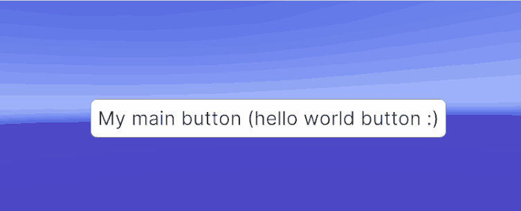
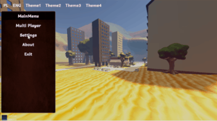

CoDriven Advanced UI documentation
Introduction
All below scenes contains UI_Toolkit_Prefab located in tool subfolder ui_prefabs/UI_Toolkit_Prefab.prefab
Just add it to the scene and attach your own Screen Manager Monobehaviour.

Or you can just create an empty object in the scene and add a UI document to it with typical panel settings and add an empty Source Asset (don't add your controls just add empty because it will be used by CoDriven Advanced UI as a UI document)
Tutorials
There are a few tutorial scenes added. Tutorials are placed in examples folder. Here is a list
Simple one theme scene
- Scene is placed in examples\simple\one_theme\scenes\OneThemeExampleScene.unity. This scene contains simple buttons styled by one theme. An example is simple for faster learning purposes.

Simple two theme scene with click actions
- Scene is placed in examples\simple\two_themes\scenes\TwoThemesExampleScene.unity. This scene is an extended version of the One Theme example. You can change the theme runtime.

Simple CmScenePart usage example scene
- simple scene using CmScenePart. Scene is placed in examples\simple\screen_part\scenes\ScreenPartExampleScene.unity . This scene is an extended version of the One Theme example that just uses CmScreenPart as an example.
Advanced tutorials
Advanced full working game menu scenes.
- Scene is placed in examples\advanced\scenes\ScreenPartExampleScene.unity. This scene is an extended version of One Theme example that just uses CmScreenPart as an example.
